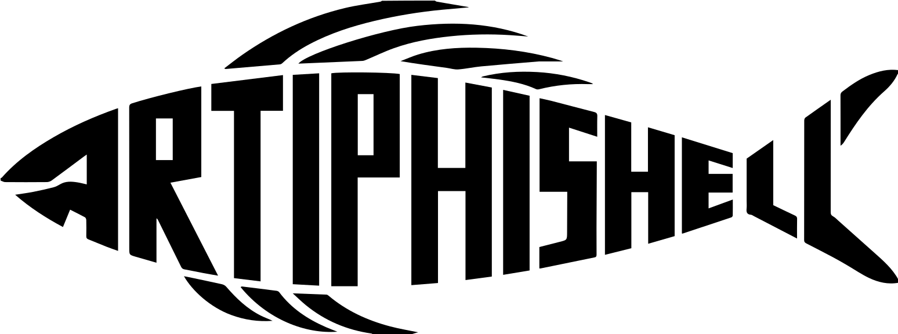
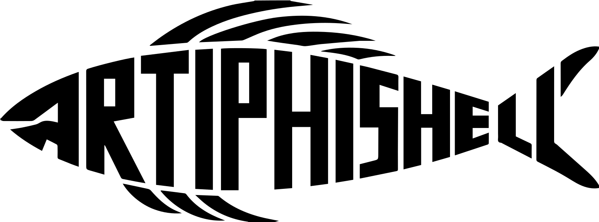
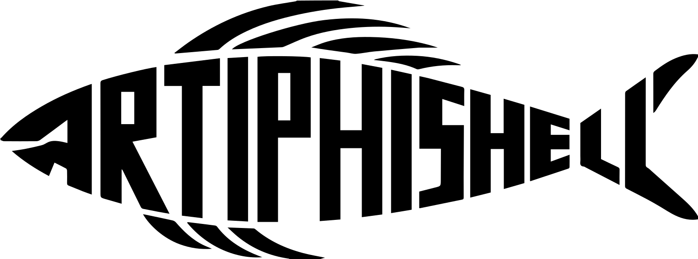
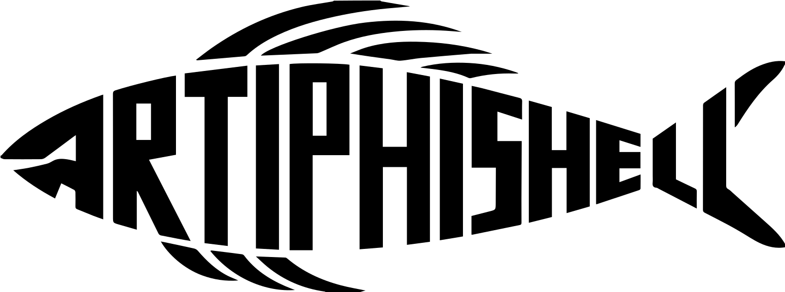

August 13, 2024 - The Shellphish hacker collective is proud to announce that their cutting-edge Cyber Reasoning System (CRS), ARTIPHISHELL, has successfully qualified for the finals of the prestigious AI Cyber Challenge (AIxCC - https://aicyberchallenge.com/) sponsored by DARPA and ARPA-H. This remarkable achievement comes with a significant milestone-a $2 million cash award. The DARPA AIxCC competition brings together the brightest minds in artificial intelligence and cybersecurity, to develop novel AI-driven systems that can find and repair the software components supporting the nation's critical infrastructure.
ARTIPHISHELL's qualification for the finals is a testament to the team's dedication, innovative approach, and technical expertise in developing advanced AI-driven solutions to address critical cybersecurity threats. "We are thrilled to see ARTIPHISHELL making it to the final round," said Adam Doupe, CEO at Shellphish Support Syndicate (the company supporting Shellphish's effort) and Director of the Center for Cybersecurity and Trusted Foundations at Arizona State University, where he is an Associate Professor. "This accomplishment reflects the team's hard work and collaborative spirit. We are eager to compete in the finals and continue pushing the boundaries of what AI and LLMs can achieve in cybersecurity." ARTIPHISHELL has demonstrated exceptional capabilities in autonomously identifying, analyzing, and patching complex vulnerabilities found in real-world software, making it a formidable contender in the DARPA AIxCC competition. "This is a natural evolution of Mechanical Phish, which is the system that Shellphish developed to participate in the DARPA Cyber Grand Challenge of 2016", said Giovanni Vigna, Professor at UC Santa Barbara. "Many ideas developed as part of other cutting-edge DARPA programs, such as CHESS, HACCS, AMP, and HARDEN have contributed to defining the ideas at the basis of ARTIPHISHELL", said Antonio Bianchi, an Assistant Professor at Purdue University.
Having been the only CRS in the competition to patch one of the identified vulnerabilities in the nginx target, the team is looking forward to seeing how far they can advance the CRS in the upcoming year. The $2 million cash award will further support the Shellphish team's efforts to refine and enhance ARTIPHISHELL as they prepare for the final phase of the competition, which is scheduled for August 2025, where the seven qualifying teams will compete for not only bragging rights but also a portion of the $8.5 million of prize money reserved for the top three. The Shellphish team comprises professors and students from Arizona State University, Purdue University, and UC Santa Barbara who have been collaborators for years. "It's a team with a proven record of collaboration and innovation", said Fish Wang, an Associate Professor at Arizona State University, "and the success of ARTIPHISHELL shows the effectiveness of multi-university cooperation".
The Shellphish team extends their gratitude to DARPA and ARPA-H, the competition organizers, and their supporters for this opportunity. As the finals approach, the team remains focused on advancing their technology and contributing to the broader goal of strengthening global cybersecurity.
For media inquiries, please contact media@shellphish.net.
Shellphish was founded in 2005 when it won the prestigious DEF CON Capture the Flag competition. Since then, the Shellphish team has grown into a team of "hackademics" participating in both security competitions and producing a substantial corpus of research. Shellphish also competed in the DARPA Cyber Grand Challenge (CGC) in 2016, ultimately winning 3rd place and $750,000 in prize money with the world's first open-source cyber reasoning system, the Mechanical Phish.